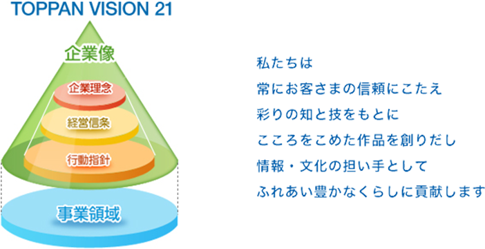
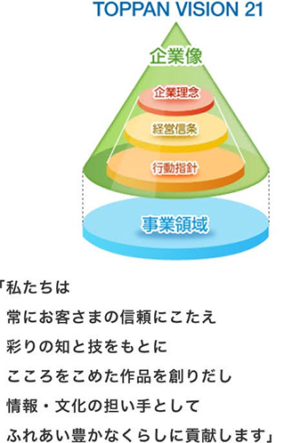
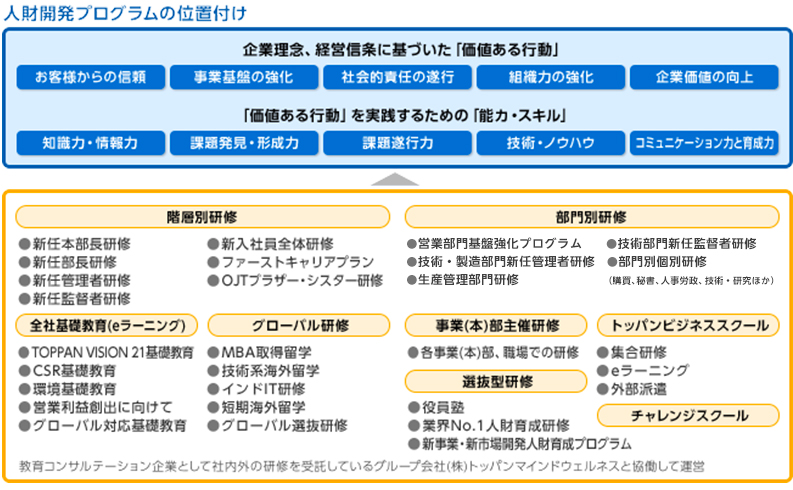
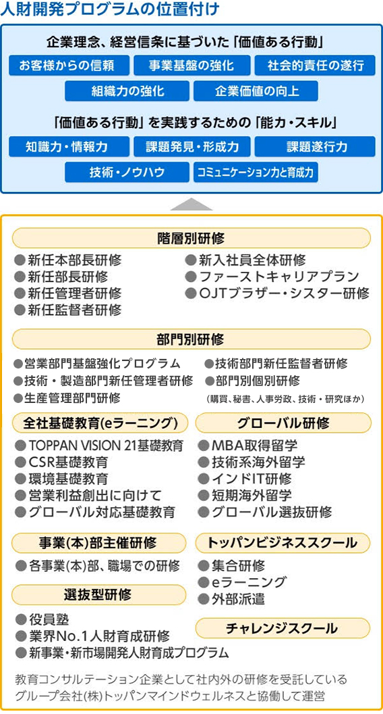

事業紹介
社員紹介
プロジェクトストーリー
企業情報
採用情報
事業紹介
事業紹介トップ
事業分野
ものつくり・ことつくり
研究開発
社員紹介
社員紹介トップ
寺林真綸
駒塚もも
西垣操
刈川直紀
山崎拓
安徳知博
石黒庸平
プロジェクトストーリー
プロジェクトストーリートップ
リポビタンD × ラブライブ！
TossSala®
企業情報
企業情報トップ
トッパンの歩み
データで見るトッパン
会社概要
採用情報
採用情報トップ
採用担当者メッセージ
募集要項
FAQ
最新情報
採用Facebookページ
サイトポリシー
個人情報保護方針
コーポレートサイト
トップページ
>
採用情報
>
FAQ
FAQ
よくある質問
福利厚生や人財育成など、よくあるご質問についてお答えします。
企業理念を教えてください
トッパンが社会や地球環境と調和しながらより成長をしていくための基本的な考えや活動の方向性を示したものが「TOPPAN VISION 21」です。「TOPPAN VISION 21」は基盤となる価値観を表した「企業像」と将来の事業の方向性を示す「事業領域」からなり、このうち企業像は「企業理念」「経営信条」「行動指針」の3つで構成されています。特に「企業理念」とは、私たちが大切にすべき価値観を示し、あらゆる企業活動の最上位概念として尊重されるものです。そして社内外に広く当社の企業姿勢を示すものです。
従業員に対する姿勢について教えてください
トッパンでは、従業員を会社の貴重な財産、すなわち「人財」ととらえ、「企業は人なり」という信念のもと、従業員が喜びを感じながら仕事に取り組めるようにバックアップをしています。
たとえば、充実した人財育成制度やワーク・ライフ・バランス推進施策など、さまざまな諸施策を展開し、社員にとって「働きがい」のある会社となることを目指しています。
環境に対する姿勢、取り組みについて教えてください
トッパンは、環境活動の統括部門である「エコロジーセンター」を中心に、グループをあげて積極的な環境活動を推進しています。
具体的には、環境への取り組みを組織的に運用する「環境マネジメント活動」、企業活動に伴う環境負荷を可能な限り低減する活動である「エコガード活動」、カートカンなどの環境配慮型製品の開発、拡販を推進する「エコクリエイティブ活動」、グループ内外への啓発活動や地域社会との共生活動を通して、利害関係者とともに環境に取り組む意識の共有化を行う「環境コミュニケーション活動」の4つの活動を全社員参加により積極的に展開しています。
＜エコガード活動事例＞
トッパンは、CO2をはじめとする温室効果ガスの排出を制御するため、従来のCO2排出量売上高原単位での管理目標から総量での管理目標への切り替えを行い、2011年度より新たな省エネへの取り組みをスタートさせています。2011年度は夏場の電力不足対応のため、従来より進めている不要照明の消灯や空調温度の見直し、「緑のカーテン」などの施策に加え、遮熱ウィンドウフィルム・断熱塗料の導入、LED照明の導入を実施しました。また、製造部門では電力需要ピークの抑制として、他地域への生産移管や勤務体制の変更を実施しました。
＜エコクリエイティブ活動事例＞
「エコクリエイティブ活動」とは、企画、デザイン、材料の検討、お客さま対応、対外活動等を中心とした、環境保全と企業の経済活動を両立させるための活動です。エコクリエイティブ活動には、大きく分けて2つの種類があります。1つは環境配慮型製品の開発です。トッパンでは14環境主張を定め、独自の環境配慮基準を設定し、これを満たすものを環境配慮型製品としています。
もう1つの活動は、環境保全支援活動です。この活動は当社のお客さまの環境保全活動を支援したり、他社やNPOとの協業・コラボレーションによる環境保全活動です。
社会貢献に対する姿勢、取り組みについて教えてください
トッパンは「情報・文化の担い手としてふれあい豊かなくらしに貢献する」という企業理念にのっとり、文化・地域社会貢献活動に積極的に取り組んでいます。文化貢献活動は、トッパン小石川ビルに併設された文化施設、印刷博物館とトッパンホールを中心に展開しています。印刷博物館は、印刷自体が文化的な価値を持つものと自覚し、印刷文化学の確立を視野にいれて活動しています。展示以外にも、体験を通じて印刷を理解できる施設もあり、小学校から企業まで150以上の機関・団体に教育・研修の場として活用されています。
トッパンホールは、「感動の共有」をコンセプトに誕生したクラシック音楽専用コンサートホールです。世界的な演奏家の公演から、若手音楽家の発掘・育成を趣旨としたコンサートまで幅広く活動しています。2008年より教育を受けることが困難な子どもたちの識字率向上を目的とした教育支援の第一歩として、「トッパンチャリティーコンサート」を年に一度開催しています。 また、国内外の多数の事業所では、企業市民として地域との共生を図るため、従業員が参加する活動を中心に、地域貢献活動やコミュニケーション活動を積極的に推進しています。
コンプライアンスに関する取り組みについて教えてください
トッパンは、常に法令を遵守し企業倫理に沿った行動をとるべく、その指針となる「行動指針」の徹底に取り組んでいます。日常起こりうる事例を題材としたQ＆A集を全社員に配布し、教育を行っています。また「行動指針推進リーダー」を定め、日常業務的レベルでの行動指針の徹底に努めています。
また、各種法令の勉強会を関係部門を中心に実施しているほか、e-learningを活用した全社員教育など、コンプライアンスに必要な啓蒙活動を積極的に行っています。
年間休日数について教えてください
2016年度の実績は125日です。
休暇について教えてください
完全週休二日制（土・日）で、そのほかに国民の祝日・休日、メーデー（5/1）、創立記念日（6/4）、夏季休暇、年末年始休暇などがあります。年次有給休暇としては、初年10日、勤続1年以上12日、2年以上14日、3年以上16日、4年以上18日、5年以上20日が付与されます。また年次有給休暇を半日単位で取得できる半日休暇制度もあります。
独身寮について教えてください
各エリアで独身寮が完備されています。
健康管理に関する取り組みについて教えてください
トッパンは社員に対する基本的な責任として、安全で安心して働ける職場環境づくりに取り組んでいます。
全国の事業所に併設された診療所スタッフと連携し、日常的に社員の健康維持サポートに取り組んでいるほか、さまざまな機会を通じてメンタルヘルス研修を実施し、従業員の心身の健康増進を支援しています。
また、全国500ヵ所のフィットネス施設と契約しています。
福利厚生制度について教えてください
財産形成や住宅取得などを目的とした財形貯蓄制度、財形融資制度で、社員の将来設計をサポートしています。また、家族や仲間と楽しめる直営保養所、契約保養所が全国にあります。事業所によってはグラウンドや体育館などの運動施設があり、スポーツ系のクラブ・サークルで利用されています。
ほかにも、社員持株制度、育児や介護を目的とした休業・勤務短縮制度などがあります。
出産・育児支援制度について教えてください
トッパンは育児・介護休業制度や勤務短縮制度の整備、家族手当の増額など、仕事と生活を両立しやすい環境づくりを進めています。
例えば、育児休業期間は、年度途中の保育所入所が困難であるという実態を踏まえ、最大で法定を上回る1歳到達後最初の3月末までに延長しています。また、育児をする社員を対象とした勤務短縮制度も、配偶者が育児に専念できる場合であっても、その適用期間を法定より長い、「子どもが小学校４年修了まで」としています。加えて、育児・妊娠期の時差出勤や、出産を機に退職する社員の再雇用制なども導入し、制度の充実を図っています。今後も引き続き次世代育成支援等に積極的に取り組んでいきます。
人財開発・人財活用に関する考え方について教えてください
トッパンでは従業員を会社の貴重な財産、すなわち「人財」と位置づけています。
従業員一人ひとりの能力や適性に応じたローテーションや、その人の新たな可能性を引き出す人財育成施策を行い、従業員が「仕事への喜び」を感じながら働ける土壌をつくると同時に、仕事と生活を両立できる環境を整え、従業員にとって「働きがい」のある会社となることを目指しています。
入社時の研修について教えてください
トッパンでは、入社後3年間を新入社員の育成期間と位置づけ、「ファーストキャリアプラン」という体系のもと、計画的な教育を実施しています。
入社後はまず、2週間程度の本社全体研修があります。各種講義やマナー研修、グループワーク、合宿研修などを通じて、社会人として、そしてトッパンの社員として必要な知識の習得、意識の醸成を行います。その後、配属先に分かれて、より実務的、具体的な講義や実習などの研修を受け、知識・スキルを習得していきます。
職場に配属された後は、先輩社員がブラザー・シスターとなり、基本的な仕事のすすめ方や社会人としての常識、マナーなどの指導を受けます（OJT）。また、「トッパンビジネススクール」「チャレンジスクール」などの自己啓発の教育プログラムが活用できます。ファーストキャリアプランの各年次での「2年目研修」「3年目研修」では、これまでの経験や身につけたスキルを棚卸し、自身の将来像を改めて描く機会となっています。
上司とブラザー・シスター、新入社員本人の3者で入社3年後の「あるべき姿」、育成目標を設定し、定期的に進捗をチェックしながら、一人ひとりの育成段階にフィットした教育が行われる仕組みになっています。
研修制度にはどのようなものがありますか
階層別研修、部門別研修、選抜型研修やグローバル研修のほか、従業員がキャリアデザインに合わせて自由に選択して受講できる「トッパンビジネススクール（選択研修）」や「チャレンジスクール（通信教育）」といった教育プログラムも準備されています。
その他、e-learningを活用した教育プログラムや、業務推進に有効な資格取得の促進など、さまざまな角度から社員のキャリアアップを支援しています。
採用情報の
トップに戻る